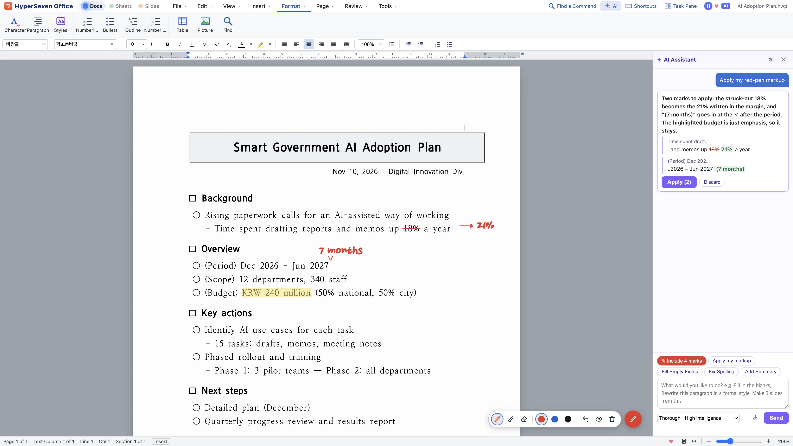

Mark it up with a red pen, say what you want, and AI proposes the edits. Open, edit and save HWP, DOCX, XLSX, PPTX and PDF in one app.
Explore Office
Example sceneOpens DWG, SKP, 3DM, RVT and IFC files as one model. Drawings, 3D, surfaces, nodes and BIM in a single flow.
Explore CAD Example scene
Example sceneWork the way you already do,
with AI right beside you
Your files, menus, shortcuts and red-pen markup all stay as they are. On top of that, AI reads the same document and proposes what to change. Tap a number to see where.
As you know it
- 1Your HWP file, as is
Open what you receive and save it back in the same format.
- 2Familiar menus and shortcuts
Character, Paragraph, Ctrl+S — the names and keys you already know.
- 3A red pen, like on paper
Strike through and write the fix in the margin.
With AI
- 4AI reads your markup
Say “Apply my red-pen markup” and see only what will change.
- 5You apply it
Nothing changes until you click Apply, and one Undo puts it back.
1
2
3
4
5
As you know it
- 1From 2D drafting to BIM
Move between drawings, 3D, surfaces and BIM the way you are used to.
- 2The commands you know
Wall, Door, Window — familiar command names and shortcuts.
With AI
- 3Say what you want
“Lay out south-facing solar panels on the roof.”
- 4Purple proposals
Changes show up as proposals before they touch the model.
- 5You accept it
Only proposals that pass the checks become real when you click Accept.
Whatever anyone uses,
files move as they are
Open what you receive, edit it, and save it in the format the other side uses.
- Hangul
- HWPHWPX
- Word
- DOCXDOCopenRTFopenODTopen
- Excel
- XLSXCSVXLSopenODSopen
- PowerPoint
- PPTXPPTopen
- PDFAnnotate, fill forms, edit text; export any document to PDF
- AutoCAD
- DWGDXF
- SketchUp
- SKP
- Rhino
- 3DMSTEP
- Revit
- RVTimportRFAimportIFC
- Archicad
- IFCExchange via IFC
- Open standards
- IFCglTFOBJPDF
Formats without a label both open and save.
From writing to building,
learn it once
Open a Hangul file, save it as Word, and the tables, fonts and page layout stay intact.
Work right away with the command names and shortcuts you learned in other programs.
⌘K search and AI work the same in every tool.
Where AI gets right to work
AI agents read files by their structure, change only what needs changing, and save. The same work, for far fewer tokens.
Agents map headings, tables and length first. Even a 10-page report takes only a few hundred tokens.
Agents send commands for just the paragraphs and cells that change, leaving formatting intact.
AI chains the command line and MCP to script jobs like batch-editing files or combining tables.
Reading and rewriting the whole file would take well over ten thousand.
Made with the people
who use it
Hit a snag? Tell us in one line from Tools › Report a Problem… in the app. When the fix ships, the app lets you know.
Right from the app, in a single line.
Your feedback shapes the next version.
The app tells you when a new version is out. Current version —
Need features fitted to your organization, or want to help HyperSeven grow?
Work with usIf it helped you, buy us a coffee.
Write with AI.
Edit with AI.
Keep evolving.
The AI era calls for a new kind of office. HyperSeven takes in AI, new technology and new ways of working first — and gets better with every version.
Word, Excel and PowerPoint are trademarks of Microsoft; AutoCAD and Revit of Autodesk; SketchUp of Trimble; Rhino of Robert McNeel & Associates; Archicad of Graphisoft. HyperSeven is not affiliated with these companies.